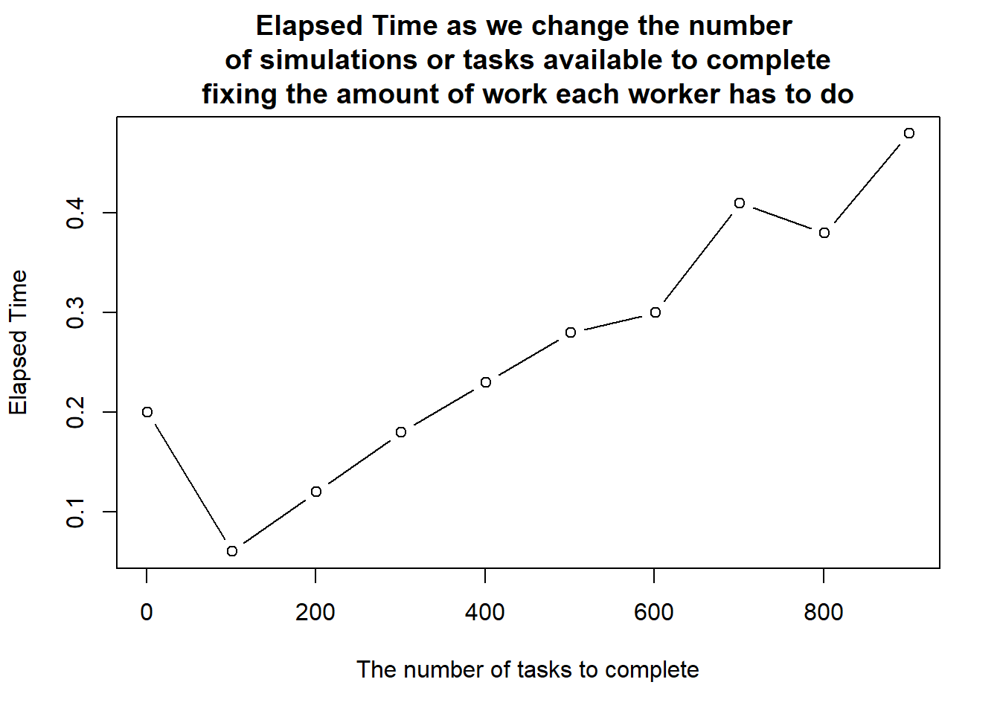
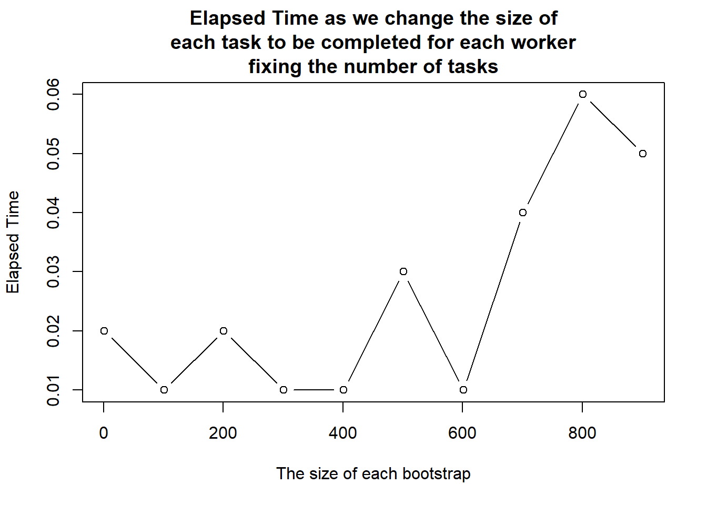
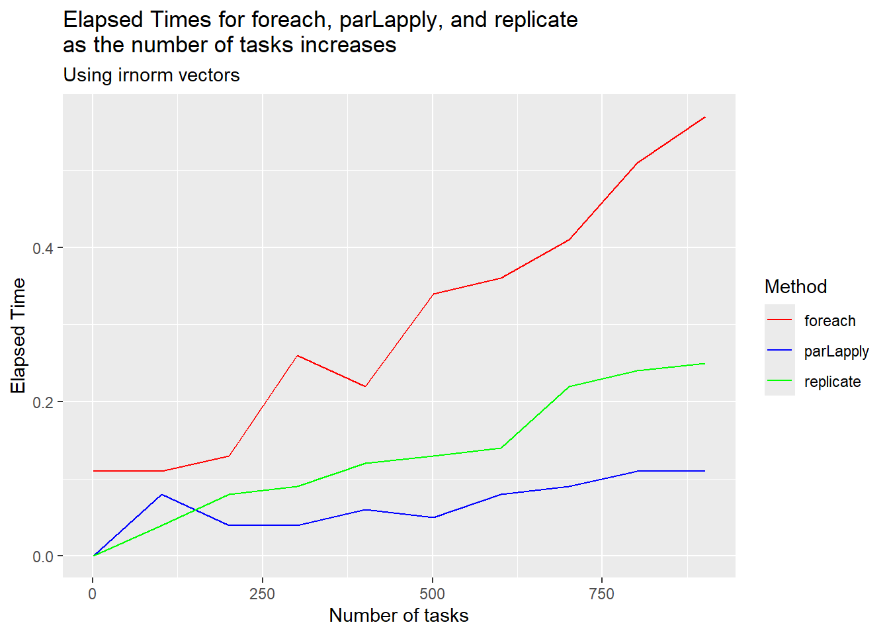

Use the doParallel package and foreach to bootstrap the median for the galaxies data (in library MASS).
If the foreach function needs access to data or a function from a certain package, this can be done by adding the .packages='MASS' (for example) argument.
How does processing time compare to that of serial processing? If each iteration’s run time is small, relative to the amount of data that needs to be loaded and returned, parallel processing might not actually speed up the total run time. Bootstrapping is relatively small: draw a sample, calculate a statistic. It might only start making a difference if each chunk becomes large relatively to the overheads of data transfer. Experiment with this. Try doing 1000 bootstrap samples at a time instead of managing single bootstrap samples.
library(doParallel)library(MASS)cores <-detectCores() -1# Use available cores minus 1cl <-makeCluster(cores)registerDoParallel(cl)bootstrap_median <-function(dat, N, B){ medians <-foreach(i =1:N, .packages ='MASS', .combine = c) %dopar% { bootstrap <-sample(B, size =length(dat), replace=TRUE)median(bootstrap) }return(medians)}
# Testing how the number of tasks affects run timeelapsed_time <-c()i <-1for(j inseq(1, 1000, by =100) ){ elapsed_time[i] <-system.time({bootstrap_median(galaxies, j, length(galaxies)) })["elapsed"] i <- i+1}plot(x=seq(1, 1000, by =100), y =elapsed_time, main ="Elapsed Time as we change the number of simulations or tasks available to completefixing the amount of work each worker has to do", xlab ="The number of tasks to complete", ylab ="Elapsed Time", type ="b")

Interpretation: As we increase the number of tasks, the elapsed time increases i.e. runs slower. This means that the overhead costs of the parallelized code become more significant as the number of tasks grows
# Testing how the size of each tasks affects run timeelapsed_time <-c()i <-1for(j inseq(1, 1000, by =100) ){ elapsed_time[i] <-system.time({bootstrap_median(galaxies, 10, j) })["elapsed"] i <- i+1}plot(x=seq(1, 1000, by =100), y =elapsed_time, main ="Elapsed Time as we change the size ofeach task to be completed for each workerfixing the number of tasks", xlab ="The size of each bootstrap", ylab ="Elapsed Time", type ="b")

Interpretation: As we increase the size of the tasks for each set of of workers, we see an initial decrease in elapsed time, however it increases later on due to overhead costs.
0.3Question 3
Estimate coverage of a percentile bootstrap confidence interval for the following scenario: sample of size 50 from an exponential distribution with mean 1.
library(doParallel)cores <-detectCores() -1# Use available cores minus 1cl <-makeCluster(cores)registerDoParallel(cl)set.seed(123)bootstrap_coverage <-function(B,N){ true_mean <-1# for exponential distribution true mean is lamda / ratesuppressWarnings(count <-foreach(i =1:N, .combine="+") %dopar% { dat <-rexp(50, rate =1) bootstrap_means <-replicate(B, mean(sample(dat,size=length(dat),replace =TRUE))) upper_ci <-as.numeric(quantile(bootstrap_means, 0.975)) lower_ci <-as.numeric(quantile(bootstrap_means, 0.025))ifelse(true_mean > lower_ci & true_mean < upper_ci, 1, 0) }) coverage <- count/Nreturn(coverage)}B <-50# Number of bootstraps be taskN <-10000# Number of simulationssuppressWarnings(system.time(print(bootstrap_coverage( B, N))))
[1] 0.8916
user system elapsed
6.92 1.06 11.07
# Coverage Probability (should be close to the 95%, our confidence interval )
0.4Question 4
The package iterators provides several functions that can be used to create sequences for the foreach function. For example, the irnorm function creates an object that iterates over vectors of normally distributed random numbers. It is useful when you need to use random variables drawn from one distribution in an expression that is run in parallel.
In this exercise, use the foreach and irnorm functions to iterate over 3 vectors, each containing 5 random variables. Find the largest value in each vector, and print those largest values.
Before running the foreach function set the seed to 1234.
set.seed(1234)cores <-detectCores() -1# Use available cores minus 1cl <-makeCluster(cores)registerDoParallel(cl)# Use foreach to find the maximum in each vectorsuppressWarnings(system.time(max_values <-foreach(i =1:3, .combine = c) %dopar% {library(iterators) it <-irnorm(1, count=5)max(nextElem(it)) # Find max value in each vector}))
Compare run time between parLapply, foreach and replicate for the above problem.
library(iterators)library(doParallel)set.seed(1234)cores <-detectCores() -1# Use available cores minus 1cl <-makeCluster(cores)registerDoParallel(cl)# Parallel Functionparallel_apply <-function(i) {library(iterators) it <-irnorm(1, count=5)max(nextElem(it))}# Use foreach to find the maximum in each vectorforeach_func <-function(n){ max_values <-foreach(i =1:n, .combine = c) %dopar% {library(iterators) it <-irnorm(1, count=5)max(nextElem(it))}}# Use parLapply to find the maximum in each vectorparLapply_func <-function(n){ max_values <-parLapply(cl, 1:n, parallel_apply)}# Use replicate to find the maximum in each vectorreplicate_func <-function (n){ max_values <-replicate(n,parallel_apply(i=n))}
# Testing how the number tasks affects run time for each functionforeach_time <-c()parLapply_time <-c()replicate_time <-c()set.seed(1234)x <-seq(1, 1000, by =100)i <-1for(n in x){ foreach_time[i] <-system.time(foreach_func(n))["elapsed"] parLapply_time[i] <-system.time(parLapply_func(n))["elapsed"] replicate_time[i] <-system.time(replicate_func(n))["elapsed"] i <- i+1}df1 <-data.frame(x=x, y=foreach_time, Group ="foreach")df2 <-data.frame(x=x, y=parLapply_time, Group ="parLapply")df3 <-data.frame(x=x, y=replicate_time, Group ="replicate")combined_df <-rbind(df1, df2, df3)library(ggplot2)ggplot(data = combined_df, aes(x = x, y = y, color = Group)) +geom_line() +labs(title ="Elapsed Times for foreach, parLapply, and replicateas the number of tasks increases",subtitle ="Using irnorm vectors", x ="Number of tasks",y ="Elapsed Time",color ="Method" ) +scale_color_manual(values =c("foreach"="Red", "parLapply"="Blue", "replicate"="Green") )

Interpretation: The foreach function is slower than both parLapply and replicate due to high parallelization overhead. While replicate is faster initially for small tasks, parLapply outperforms it as the number of tasks increases, thanks to better scalability and efficient workload distribution across cores. For large tasks, parLapply is the best choice, while replicate is more suitable for smaller, serial operations.